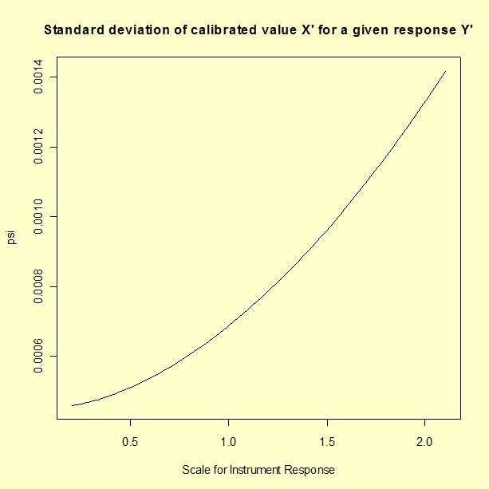
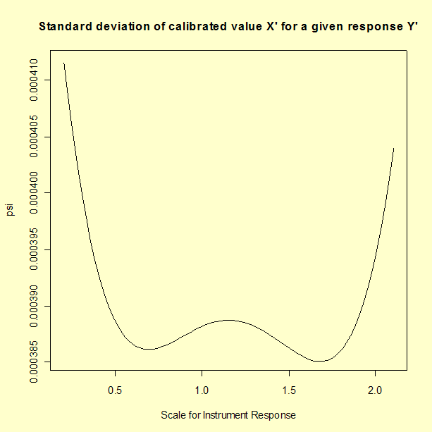

|
2.
Measurement Process Characterization
2.3. Calibration 2.3.6. Instrument calibration over a regime 2.3.6.7. Uncertainties of calibrated values
|
|||
| Propagation of error for uncertainty of calibrated values of loadcells |
The purpose of this page is to show the propagation of error
for calibrated values of a loadcell based on a quadratic calibration
curve where the model for instrument response is
$$ Y = a + bX + cX^2 + \epsilon $$
The calibration data are instrument responses
at known loads (psi), and estimates of the
quadratic coefficients, \( a, \,\, b, \,\, c \),
and their associated standard deviations are shown with the analysis.
A graph of the calibration curve showing a measurement \(Y'\) corrected to \(X'\), the proper load (psi), is shown below. |
||
| Uncertainty of the calibrated value X' | The uncertainty to be evaluated is the uncertainty of the calibrated value, \(X'\), computed for any future measurement, \(Y'\), made with the calibrated instrument where $$ X' = \frac{-\hat{b} \pm \sqrt{\hat{b}^2 - 4 \hat{c} \left( \hat{a} - Y' \right)}}{2 \hat{c}} $$ |
| Partial derivatives | The partial derivatives are needed to compute uncertainty. $$ \frac{\partial{X'}}{\partial{Y'}} = \frac{1}{\sqrt{\hat{b}^{2} - 4\hat{c}(\hat{a}-Y')}} $$ $$ \frac{\partial{X'}}{\partial{\hat{a}}} = \frac{-1}{\sqrt{\hat{b}^{2} - 4\hat{c}(\hat{a}-Y')}} $$ $$ \frac{\partial{X'}}{\partial{\hat{b}}} = \frac{-1 + \frac{\hat{b}}{\sqrt{\hat{b}^{2} - 4\hat{c}(\hat{a}-Y')}}}{2\hat{c}} $$ $$ \frac{\partial{X'}}{\partial{\hat{c}}} = \frac{-\hat{a} + Y'}{\hat{c}\sqrt{\hat{b}^{2} - 4\hat{c}(\hat{a}-Y')}} - \frac{-\hat{b} + \sqrt{\hat{b}^{2} - 4\hat{c}(\hat{a}-Y')}}{2\hat{c}^{2}} $$ |
| The variance of the calibrated value from propagation of error |
The variance of \(X'\) is defined from
propagation of error as follows:
$$ u^{2} = \left( \frac{\partial{X'}}{\partial{Y'}}\right) ^{2} (s_{Y'})^{2} +
\left( \frac{\partial{X'}}{\partial{\hat{a}}}\right) ^{2} (s_{\hat{a}})^{2} +
\left( \frac{\partial{X'}}{\partial{\hat{b}}}\right) ^{2} (s_{\hat{b}})^{2} +
\left( \frac{\partial{X'}}{\partial{\hat{c}}}\right )^{2} (s_{\hat{c}})^{2} $$
The values of the coefficients and their respective standard deviations
from the quadratic fit to the calibration curve are substituted in the
equation. The standard deviation of the measurement, \(Y\),
may not be the same as the standard deviation from the fit to the calibration
data if the measurements to be corrected are taken with a different
system; here we assume that the instrument to be calibrated has a
standard deviation that is essentially the same as the instrument used
for collecting the calibration data and the residual standard
deviation from the quadratic fit is the appropriate estimate.
a = -0.183980e-04 sa = 0.2450e-04 b = 0.100102 sb = 0.4838e-05 c = 0.703186e-05 sc = 0.2013e-06 sy = 0.0000376353 |
| Graph showing the standard deviations of calibrated values X' for given instrument responses Y' ignoring covariance terms in the propagation of error |
The standard deviation expressed above is not easily interpreted
but it is easily graphed. A graph showing standard deviations of
calibrated values, \(X'\), as a function of
instrument response, \(Y'\), is shown below.
 |
| Problem with propagation of error | The propagation of errors shown above is not complete because it ignores the covariances among the coefficients, \( a, \,\, b, \,\, c \). Unfortunately, some statistical software packages do not display these covariance terms with the other output from the analysis. |
| Covariance terms for loadcell data |
The variance-covariance terms for the loadcell data set are shown below.
a b c
a 6.0049021-10
b -1.0759599-10 2.3408589-11
c 4.0191106-12 -9.5051441-13 4.0538705-14
The diagonal elements are the variances of the coefficients, \( a, \,\, b, \,\, c \), respectively, and the off-diagonal elements are the covariance terms. |
| Recomputation of the standard deviation of X' |
To account for the covariance terms, the variance of \(X'\)
is redefined by adding the covariance terms. Appropriate substitutions
are made; the standard deviations are recomputed and graphed as a
function of instrument response.
sab = -1.0759599e-10 sac = 4.0191106e-12 sbc = -9.5051441e-13 |
| The graph below shows the correct estimates for the standard deviation of \(X'\) and gives a means for assessing the loss of accuracy that can be incurred by ignoring covariance terms. In this case, the uncertainty is reduced by including covariance terms, some of which are negative. | |
| Graph showing the standard deviations of calibrated values, X', for given instrument responses, Y', with covariance terms included in the propagation of error |  |
| Sample code | The results in this section can be generated using R code. |